DreamLab AI logo options
Generated by build.mjs in this folder. Every letter is a vector path, so no font is needed; animated files use CSS and stop for visitors who prefer reduced motion. Not deployed: this folder is outside public/.
1 · Classic: the alchemist's bowl, recreated
The bowl, constellation and wisp from the old raster logo with an italic "DreamLab AI" wordmark. The bowl comes from the collective's lowercase "dreamlab" logo, so it implies a family resemblance.
2 · The mark alone, and a favicon cut
The favicon version drops the wisp, thickens strokes and keeps three nodes so it still reads at 16 pixels. It would replace the current white heart.
3 · Today's header, evolved
Keeps the current spaced capitals, now DREAMLAB AI; the single cyan dot becomes a three-node constellation that pulses gently.
4 · A freer idea: the golden field
Borrows the homepage hero's golden-angle Voronoi seeds: 89 points spiralling into a glowing core, twinkling in spiral order and turning slowly. The "dream" forming in the lab.

 32
32
180 animated 180